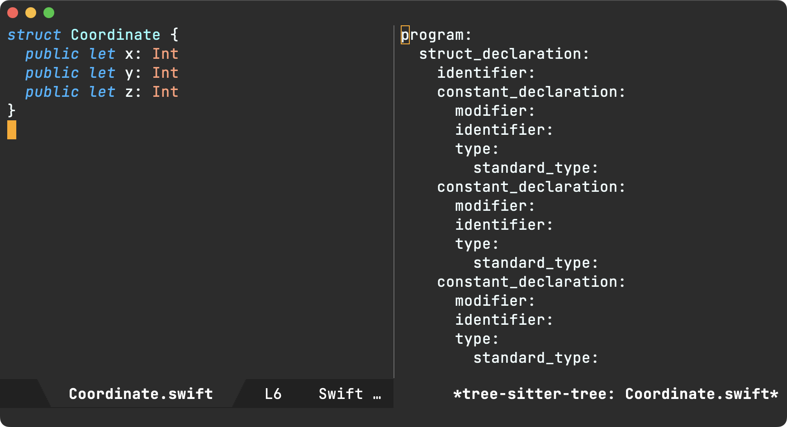
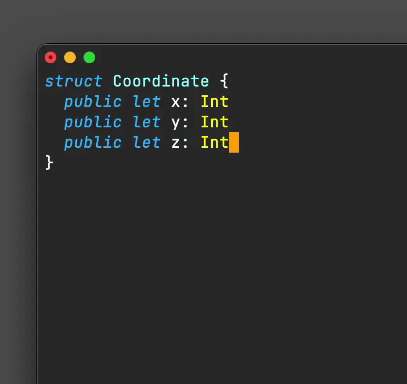

Álvaro Ramírez
Emacs: Context-aware yasnippets
Back in 2020, I wrote a semi-automatic yasnippet to generate Swift initializers. I say semi-automatic because it could have been a little smarter. While it helped generate some of the code, what I really wanted was full context-aware generation. The Swift struct already had a few properties defined, so a smarter yasnippet should have been able to use this info for code generation.

With an extra push, we could have written a smarter yasnippet, but it may require a fair bit of parsing logic. Fast forward to today, and bringing context-awareness seems like the right match for Tree-sitter. While Tree-sitter can enable faster and more reliable syntax-highlighting in our beloved text editor, it can also power smarter tools. It does so by exposing a semantic snapshot of our source code using a syntax tree.
Let's see how we can use Tree-sitter to realise our original yasnippet vision. We'll start with the same struct snippet we used back in 2020. The goal is to generate an initializer using the existing definitions.
struct Coordinate { public let x: Int public let y: Int public let z: Int }
While Emacs will will soon ship its own Tree-sitter integration, I've opted to try out the emacs-tree-sitter package as Swift support is currently included in tree-sitter-langs.
I have much to learn much about Tree-sitter syntax trees, but the package ships with a handy tool to dump the tree via tree-sitter-debug-mode.

With a syntax tree in mind, one can craft a query to semantically extract parts of the code. In our case, we want property names and types.
I've yet to get acquainted with Tree-sitter's query syntax, but the package also ships with another handy tool that helps view query results via tree-sitter-query-builder.

The following query extracts all the let properties in file. You can see the builder in action above, highlighting our query results.
(struct_declaration (constant_declaration (identifier) @name (type) @value))
If we want to be more thorough, we should likely cater for classes, vars, int/string literals, etc. so the query needs to be extended as follows. I'm sure it can be written differently, but for now, it does the job.
(struct_declaration (variable_declaration (identifier) @name (type) @type)) (struct_declaration (variable_declaration (identifier) @name (string) @value)) (struct_declaration (variable_declaration (identifier) @name (number) @value)) (struct_declaration (constant_declaration (identifier) @name (type) @value)) (struct_declaration (constant_declaration (identifier) @name (string) @value)) (struct_declaration (constant_declaration (identifier) @name (number) @value)) (class_declaration (variable_declaration (identifier) @name (type) @type)) (class_declaration (variable_declaration (identifier) @name (string) @value)) (class_declaration (variable_declaration (identifier) @name (number) @value)) (class_declaration (constant_declaration (identifier) @name (type) @type)) (class_declaration (constant_declaration (identifier) @name (string) @value)) (class_declaration (constant_declaration (identifier) @name (number) @value))
Now that we got our Tree-sitter query sorted, let's write a little elisp to extract the info we need from the generated tree. We'll write a swift-class-or-struct-vars-at-point function to extract the struct (or class) at point and subsequently filter its property names/types using our query. To simplify the result, we'll return a list of alists.
(defun swift-class-or-struct-vars-at-point () "Return a list of class or struct vars in the form '(((name . \"foo\") (type . \"Foo\")))." (cl-assert (seq-contains local-minor-modes 'tree-sitter-mode) "tree-sitter-mode not enabled") (let* ((node (or (tree-sitter-node-at-point 'struct_declaration) (tree-sitter-node-at-point 'class_declaration))) (vars) (var)) (unless node (error "Neither in class nor struct")) (mapc (lambda (item) (cond ((eq 'identifier (tsc-node-type (cdr item))) (when var (setq vars (append vars (list var)))) (setq var (list (cons 'name (tsc-node-text (cdr item)))))) ((eq 'type (tsc-node-type (cdr item))) (setq var (map-insert var 'type (tsc-node-text (cdr item))))) ((eq 'string (tsc-node-type (cdr item))) (setq var (map-insert var 'type "String"))) ((eq 'number (tsc-node-type (cdr item))) (setq var (map-insert var 'type "Int"))) (t (message "%s" (tsc-node-type (cdr item)))))) (tsc-query-captures (tsc-make-query tree-sitter-language "(struct_declaration (variable_declaration (identifier) @name (type) @type)) (struct_declaration (variable_declaration (identifier) @name (string) @value)) (struct_declaration (variable_declaration (identifier) @name (number) @value)) (struct_declaration (constant_declaration (identifier) @name (type) @value)) (struct_declaration (constant_declaration (identifier) @name (string) @value)) (struct_declaration (constant_declaration (identifier) @name (number) @value)) (class_declaration (variable_declaration (identifier) @name (type) @type)) (class_declaration (variable_declaration (identifier) @name (string) @value)) (class_declaration (variable_declaration (identifier) @name (number) @value)) (class_declaration (constant_declaration (identifier) @name (type) @type)) (class_declaration (constant_declaration (identifier) @name (string) @value)) (class_declaration (constant_declaration (identifier) @name (number) @value))") node nil)) (when var (setq vars (append vars (list var)))) vars))
(((type . "Int") (name . "x")) ((type . "Int") (name . "y")) ((type . "Int") (name . "z")))
Finally, we write a function to generate a Swift initializer from our property list.
(defun swift-class-or-struct-initializer-text (vars) "Generate a Swift initializer from property VARS." (cl-assert (seq-contains local-minor-modes 'tree-sitter-mode) "tree-sitter-mode not enabled") (format (string-trim " init(%s) { %s }") (seq-reduce (lambda (reduced var) (format "%s%s%s: %s" reduced (if (string-empty-p reduced) "" ", ") (map-elt var 'name) (map-elt var 'type))) vars "") (string-join (mapcar (lambda (var) (format "self.%s = %s" (map-elt var 'name) (map-elt var 'name))) vars) "\n ")))
init(x: Int, y: Int, z: Int) {
self.x = x
self.y = y
self.z = z
}
We're so close now. All we need is a simple way invoke our code generator. We can use yasnippet for that, making init our expandable keyword.
# -*- mode: snippet -*- # name: init all # key: init # -- `(swift-class-or-struct-initializer-text (swift-class-or-struct-vars-at-point))`
And with all that, we've got our yasnippet vision accomplished!

Be sure to check out this year's relevant EmacsConf talk: Tree-sitter beyond syntax highlighting.
All code is now pushed to my config repo. By the way, I'm not super knowledgable of neither yasnippet nor Tree-sitter. Improvements are totally welcome. Please reach out on the Fediverse if you have suggestions!
Update
Josh Caswell kindly pointed out a couple of interesting items:
- tree-sitter-langs's Swift grammar is fairly outdated/incomplete.
- There are more up-to-date Swift grammar implementations currently available:
- tree-sitter-swifter (by Josh Caswell himself)
- tree-sitter-swift (by Alex Pinkus)